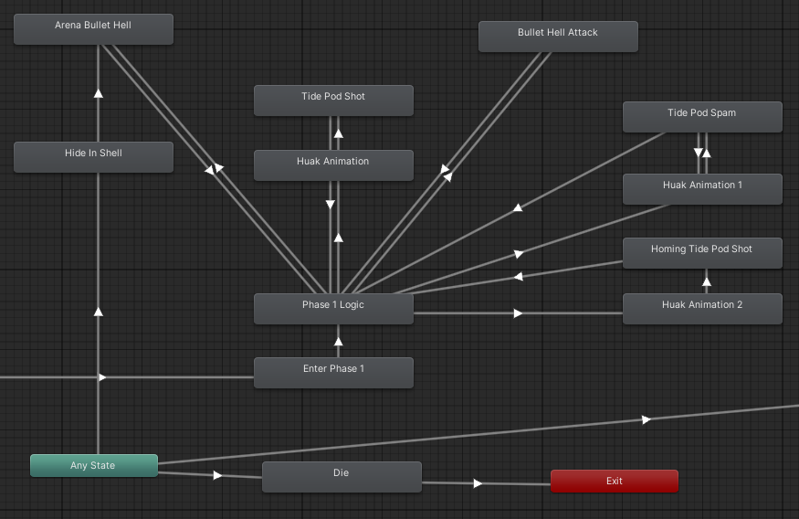
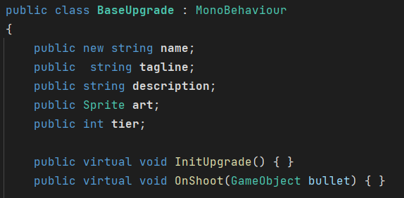
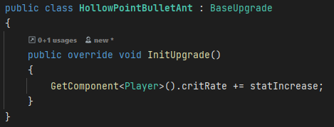
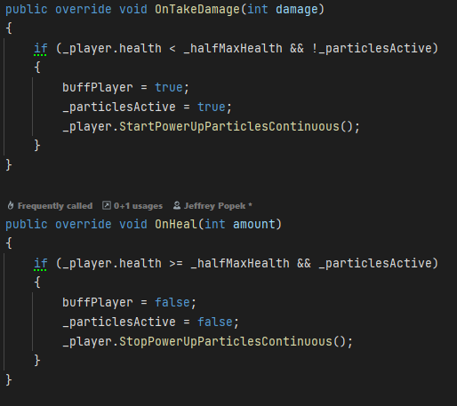
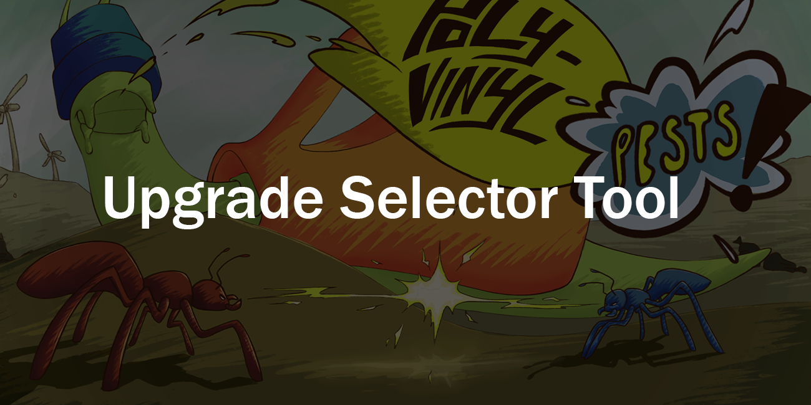
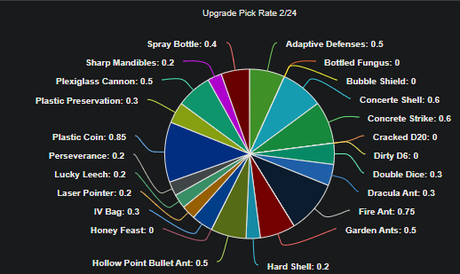
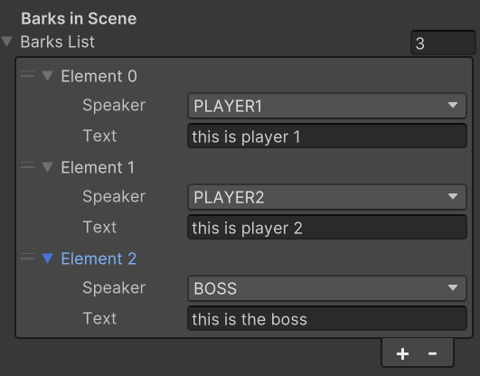
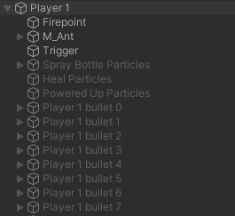
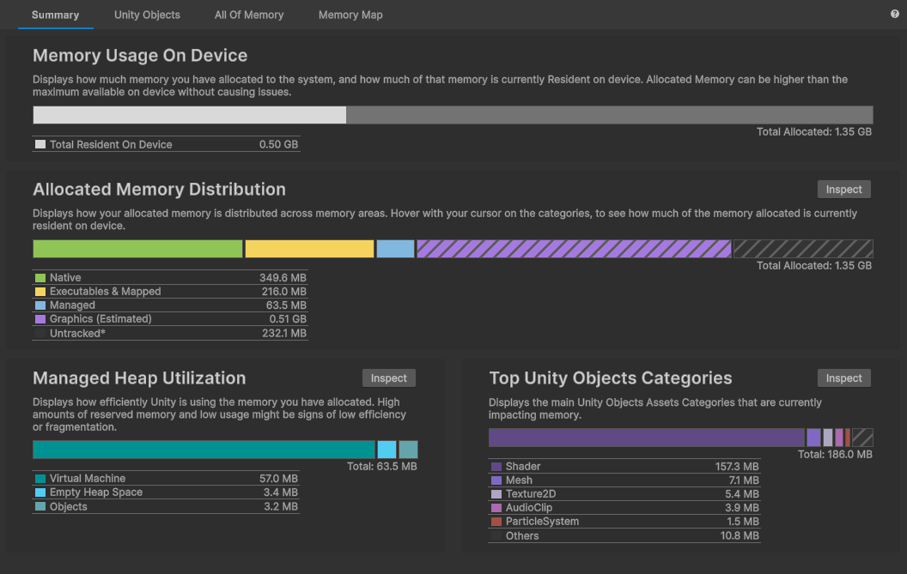

Boss AI & Combat Systems
Built reusable boss behaviors and bullet-hell systems, using Unity’s Animator state machine to make encounter logic easier for designers and artists to work with.
Lead Programmer · Senior Capstone
Lead Programmer · Unity / C# · 15-Person Team · 24 Weeks
Poly-Vinyl Pests! is a competitive two-player arcade game developed as my senior capstone at Champlain College. As Lead Programmer, I worked across gameplay, AI, UI, tools, optimization, and production while helping support the programming team throughout development.
Players race through a mutated, trash-infested world, defeating enemies and bosses, collecting upgrades, and competing for the highest score before facing each other in a final PvP encounter.

01 / Overview
A cross-disciplinary programming role spanning core gameplay, production systems, and technical leadership.
Built reusable boss behaviors and bullet-hell systems, using Unity’s Animator state machine to make encounter logic easier for designers and artists to work with.
Helped lead development of a modular upgrade framework that allowed new upgrades and effects to be added without continually expanding player-controller logic.
Maintained and expanded player systems, scoring, PvP encounters, boss gameplay, and local multiplayer functionality.
Built gameplay UI and internal tools, including upgrade-selection interfaces and data collection used to support balancing decisions.
Used pooling, Unity Profiler, occlusion culling, and memory investigation to improve performance across combat and cinematic sequences.
Served as Lead Programmer, helping onboard new team members, maintaining technical documentation, supporting two development teams, and preparing Steam builds and achievements.
Core game loop
Poly-Vinyl Pests! combines boss-focused combat with competitive scoring and direct PvP. Both players fight through the same encounters, earning score and collecting upgrades that shape their builds along the way. The competition eventually culminates in direct PvP, giving each player another chance to pull ahead before the final score determines the winner.
02 / Boss AI & Combat
I implemented boss behavior using Unity’s Animator as a visual state machine rather than keeping the entire AI flow inside code. Each state represented a boss behavior or attack, while transitions controlled when the boss moved between actions.
This approach was useful for a multidisciplinary team because designers and artists could inspect the boss’s behavior visually, adjust transitions, and connect animations without requiring a programmer for every iteration.

Several bosses required large numbers of configurable projectiles, so I built a reusable bullet-hell system instead of scripting every attack individually.
Projectile patterns could control properties such as direction, rotation, timing, and movement while using object pooling to avoid repeatedly creating and destroying projectiles during combat. This gave designers reusable building blocks for creating different boss patterns without requiring entirely new implementations.

Boss showcase
Built around the reusable boss framework, combining homing attacks and bullet-hell patterns with a second phase to prove the system could support encounters that changed meaningfully over the course of a fight.
Designed around production constraints, reusing existing systems and minimizing new animation requirements so the team could create a distinct boss encounter without adding the same workload as earlier fights.
Developed as a more demanding late-game encounter, using the shared boss and projectile systems in a more complex combination to push the framework further and create a stronger finale-style fight.
03 / Upgrade System
During the second half of development, I helped lead the team responsible for Poly-Vinyl Pests!’ upgrade system. Because the game required a growing library of upgrades with very different effects, we needed an architecture that allowed new behaviors to be added without continually expanding the player controller or creating tightly coupled upgrade logic.
I worked on a modular system where upgrades shared a common base structure while individual upgrades contained their own behavior. Gameplay events such as firing, taking damage, or changing player state could notify equipped upgrades, allowing each upgrade to respond independently.
OnShootOnDamageOnUpdateCritical HitConditional BuffStatus EffectEach upgrade manages its own behavior rather than adding more conditional logic to the player controller.
New upgrade types can be introduced without rewriting the entire system.
Multiple programmers can work on separate upgrades with less risk of modifying the same central gameplay code.
Implementation workflow

Representative upgrades

A passive upgrade that adds critical-hit behavior to the player’s attacks. It demonstrates an upgrade reacting to the shooting/damage pipeline without requiring critical-hit logic to live permanently inside the player’s weapon code.

A conditional upgrade that changes player behavior while below a health threshold, demonstrating how the same upgrade framework could support state-dependent effects rather than only permanent stat changes.
04 / Production Workflows
Building the upgrade system also exposed a second problem: once we had dozens of possible upgrades, designers needed faster ways to test and balance them. I built several internal tools to support that workflow.
Gameplay testing
I built an internal Unity tool that allowed designers to directly assign any upgrade to either player during development, eliminating the need to repeatedly reroll through the normal selection sequence.
Read the technical breakdown →
Balance data
To give designers more data for balancing upgrades, I built a lightweight analytics pipeline that tracked how often each upgrade was shown and selected during playtests. The game exported session results to CSV, and a Python utility combined the files into data designers could use to compare pick rates.
Read the technical breakdown →
Narrative workflow
I also built a no-code narrative workflow that allowed the narrative team to configure character dialogue directly through the Unity Inspector. Conversations were represented as ordered BarkData entries with selectable speakers, allowing narrative content to be created without modifying gameplay code.
Read the technical breakdown →

05 / Player-Facing Systems
I worked on gameplay UI across upgrade selection, boss encounters, narrative displays, scores and results, and menu flows.
Competitive finale
I implemented and collaborated on the PvP gameplay that connects the game’s boss encounters. After competing for score during a boss fight, players battle each other in different arenas, each featuring unique stage hazards that change how the fight plays out. The winner earns additional score, creating another chance to shift the lead before the next round.


06 / Performance

Combat performance
I used object pooling to reuse bullets, projectiles, and visual effects instead of repeatedly instantiating and destroying objects during projectile-heavy combat.

Memory investigation
I used Unity Profiler to investigate memory and performance issues involving Timeline cinematic sequences, then worked with a designer to reduce memory use. Along with occlusion culling, these changes made cutscenes run more smoothly and prevented the crashes we had observed.
07 / Technical Leadership
My work extended beyond feature implementation into onboarding, coordination, documentation, and release support.
Helped onboard six new team members and establish technical familiarity with the project.
Maintained technical plans, implementation notes, pipelines, standards, and debugging resources.
Supported programmers across the team and helped coordinate technical work across two development groups.
Managed Steam builds and implemented or integrated 47 achievements in collaboration with the design and art teams.
Contact